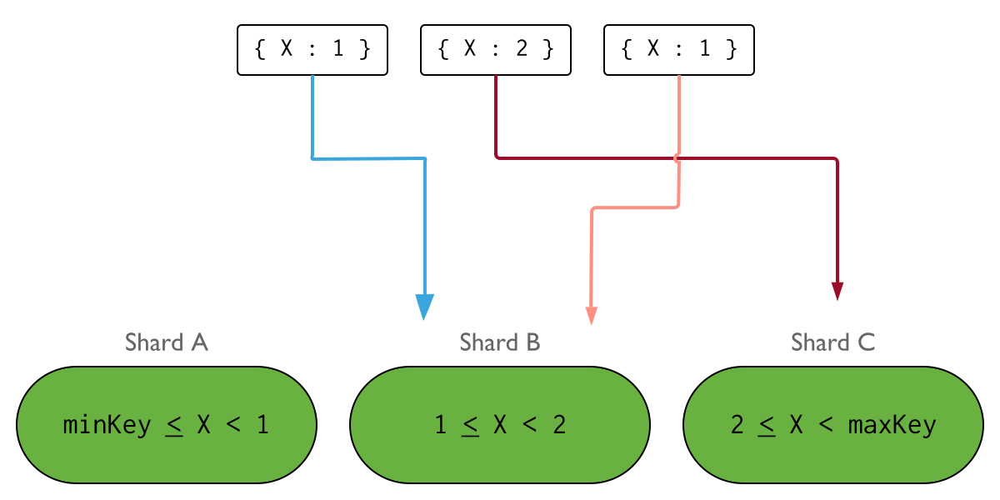

| Title | Date | Modified | Category |
|---|---|---|---|
| mongodb | 2019-08-23 12:00 | 2019-08-23 12:00 | db |
参考 4.2版本文档
1. Sharding
分片，是一种跨多台机器分布数据的方法，mongodb使用分片来支持具有非常大的数据集和高吞吐量操作的部署。
具有大数据集或高吞吐量应用程序的数据库系统可能会挑战单个服务器的容量。例如，高查询率会耗尽服务器的CPU容量。大于系统RAM的工作集大小会对磁盘驱动器的I/O容量造成压力。
解决系统增长的方法有两种：垂直和水平缩放。
垂直扩展，包括增加单个服务器的容量，例如使用更强大的CPU，更多的RAM，更多的存储空间。垂直缩放有一个实际的最大值。
横向扩展，包括将系统数据集和负载划分到多台服务器上，根据需要添加额外的服务器以增加容量。虽然一台机器的整体速度或容量可能不高，但每台机器都处理整体工作负载的一个子集，可能比单个高速高容量服务器提供更好的效率。 扩展部署的容量只需要根据需要添加额外的服务器，这可能比单台机器的高端硬件的总体成本更低。权衡是增加了部署的基础设施和维护的复杂性。
MongoDB通过分片进行水平缩放。
1.1. Sharded Cluster
一个分片集群包含下面几个组件：
- shard: 每一个分片包含了分片数据的一个子集，每一个分片可以被部署为一个副本集。
- mongos：mongos职责是作为一个请求的路由，提供一个接口，处于客户端程序和分片集群中间。
- config servers: 配置服务器存储元数据和集群的配置信息。配置服务器必须部署为一个副本集。
分片数据是在collection 的级别，分布集合的数据到分片集群上。
1.1.1. Production Configuration
在生产环境中，确保数据是冗余的，并且您的系统是高度可用的。请参考下面内容部署生产环境的分片集群： 部署Config Servers 为3个节点的副本集 部署每个分片为3个节点的副本集 部署一个或多个mongos 路由
Replica Set Distribution
如果有可能，考虑部署每个副本集的一个副本到作为灾难恢复位置的站点中。
Number of Shards
分片需要至少两个分片来分发数据。 如果你计划在不就的将来启用分片，那么单分片集群可能很有用，但在部署时不需要这样做。
Number of mongos and Distribution
部署多个mongos路由器支持高可用和可扩展性。一种常见的模式是在每个应用服务器上放置一个mongos。在每个应用服务器上部署一个mongos路由器可以减少应用程序和路由器之间的网路延迟。
或者，您可以在专用主机上放置mongos，大型部署受益于这种方法，因为它将客户端应用程序服务器的数量和mongos实例的数量分离开来。可以更好地控制mongod实例所服务的连接数。
在自己的主机上安装mongos实例允许这些实例使用更多的内存。内存不会与mongod实例共享。可以使用主片来承载mongos路由器，但要注意，内存争用可能成为大型部署中的一个问题。
部署中可以拥有的mongos数量没有限制。但是，由于mongos路由器经常与您的配置服务器通信，因此随着路由器数量的增加，请密切监视配置服务器的性能。如果您看到性能下降，那么在您的部署中限制mongos路由器的数量可能是有益的。

1.1.2. Development Configuration
为了测试和开发，你可以部署一个分片集群用一个最小数量的组件。这些非生产环境集群由如下组件。
一个有一个成员的config server的复制集 至少一个分片，并搭建一个节点的复制集 一个mongos实例

1.2. Shards
一个分片包含了分片集群的分片数据的一个子集，整个集群的分片一起保持了集群的整个数据集。
mongodb3.6, 分片必须被部署为复制集去提供冗余和高可用。
用户，客户端，或应用程序只能连接到一个分片来执行本地管理和维护操作。
对单个片的执行查询只会返回数据的子集。连接到mongos以执行集群级别的操作，包括读或写操作。
1.2.1. Primary Shard（主片）
在分片集群中，每个数据库都有一个主片，它保存了所有未分片的集合。每个数据库都有自己的主片。主片与复制集中的主节点没有关系。
在创建新数据库时，mongos通过在数据量最少的集群中选择片来作为主片。
mongos使用listDatabase命令返回的totalsize字段作为选择条件的一部分。
要更改数据库的主片，请使用moveprimary命令。迁移主片的过程可能需要很长时间才能完成，在完成之前，你不应该访问与数据库关联的集合。根据迁移的数据量，迁移可能会影响整个集群操作。在尝试更改主片之前，请考虑对集群操作和网络负载的影响。
当你使用以前作为复制集的片部署新的分片集群时，所有现有的数据库将继续驻留在其原始的复制集上。随后创建的数据库可以驻留在集群中的任何碎片上。
1.2.2. Shard Status
sh.status()方法可以查看集群状态。这些报告包括哪些碎片是数据库的主要碎片以及碎片之间的块分布。
1.2.3. Sharded Cluster Security
使用内部/成员身份验证来加强集群内的安全性，并防止未经授权的集群组件访问集群。必须使用适当的安全设置启动集群中的每个mongod，以便强制进行内部身份验证。
1.3. Config Servers
配置服务器存储分片集群的元数据。元数据反应了分片集群中所有数据和组件的状态和组织。元数据包括每个碎片上的块列表以及定义块的范围。
mongos实例缓存这些数据，并使用它将读写操作路由到正确的片。当集群的元数据发生变化时，mongos会更新缓存，例如块分割或添加片。片还从配置服务器读取块元数据。
配置服务器还存储身份验证配置信息，如基于角色的访问控制或集群的内部身份验证设置。
mongodb还是用配置服务器来管理分布式锁。
每个分片集群必须有自己的配置服务器。不要对不同的分片集群使用相同的配置服务器。
1.3.1. Replica Set Config Servers
从mongodb3.2开始，可以将分片集群的配置服务器部署为复制集（CSR），而不是三个镜像配置服务器（SCCC）。为配置服务器使用复制集可以提高配置服务器之间的一致性，因为mongodb可以利用配置数据的标准副本集读写协议。此外，为配置服务器使用副本集允许分片集群拥有3个及以上的配置服务器，因为复制集最多可以有50个成员。要将配置服务器部署为复制集，配置服务器必须运行wiredtiger存储引擎。
在3.4版本中，mongodb取消了对SCCC配置服务器的支持。
当用于配置服务器时，以下限制适用于复制集配置： 必须没有仲裁人。 必须没有延迟成员。 必须生成索引（即，任何成员都不应将BuildIndexes设置为false）。
1.3.2. Read and Write Operations on Config Servers
Writes to Config Servers
Reads from Config Servers
1.3.3. Config Server Availability
如果配置服务器副本集丢失其主节点，并且无法选择主节点，则集群的元数据将变为只读。您仍然可以从碎片中读取和写入数据，但是在副本集可以选择主数据之前，不会发生块迁移或块分割。
在分片集群中，mongod和mongos实例监视分片集群中的副本集（例如shard replica set，config server replica set）。
如果所有配置服务器都不可用，那么集群可能会变得不可操作。为了确保配置服务器保持可用和完整，配置服务器的备份至关重要。与集群中存储的数据相比，配置服务器上的数据较小，并且配置服务器的活动负载相对较低。
对于3.2分片集群，如果连续不成功的尝试监视配置服务器副本集的次数超过replmonitormaxfailedcheck参数值，则在重新启动该实例前，监视mongos或mongod实例将不可用。
1.3.4. Sharded Cluster Metadata
use config连接config 数据库。
含有以下表： changelog chunks collections databases lockpings locks mongos settings shards version
1.3.5. Sharded Cluster Security
1.4. mongos
mongos实例将查询和写操作路由到一个分片集群中的分片。从应用程序的角度来看，mongos提供了到分片集群的唯一接口。应用程序不应该与片直接通信。
mongos通过缓存配置服务器中的元数据来跟踪哪些数据是在哪些分片上的。mongos使用元数据将操作从应用程序和客户端路由到mongod实例。mongos没有持久状态，并且消耗最少的系统资源。
最常见的做法是在与应用服务器相同的系统上运行mongos实例，但是可以在分片上或其他专用资源上维护mongos实例。
1.4.1. Routing And Results Process
mongos实例通过以下方式将查询路由到集群： 确定必须接收查询的片列表。 在所有目标片上建立游标。 然后，mongos合并来自每个目标片的数据，并返回结果文档。某些查询修饰符（如排序）在mongos检索结果之前对片执行。
在3.6版本中进行了更改：对于在多个碎片上运行的聚合操作，如果操作不需要在数据库的主碎片上运行，则这些操作可以将结果路由回mongos，然后在那里合并结果。
有两种情况下，管道不能在mongos上执行。
第一种情况发生在拆分管道的合并部分包含必须在主片上运行的阶段时。
第二种情况发生在拆分管道的合并部分包含一个可以将临时数据写入磁盘的阶段，并且客户端已指定allowdiskuse:true时。在这种情况下，假设合并管道中没有需要主片的其他阶段，合并将在聚集目标的片中随机选择的片上运行。
有关聚合工作如何在分片集群查询的组件之间拆分的详细信息，请使用explain:true作为aggregation()调用的参数。
在某些情况下，当片键或片键的前缀是查询的一部分时，mongos执行目标操作，将查询路由到集群中的分片子集。
1.4.2. How mongos Handles Query Modifiers
1.4.3. Confirm Connection to mongos Instances
1.4.4. Targeted Operations vs. Broadcast Operations
1.5. Shard Keys
mongodb使用片键在不同的分片之间分发集合的文档。 片键由目标集合中每个文档存在的一个或多个字段组成。
在对一个集合进行分片时选择片键。一旦选择，不能更改。一个分片集合只能有一个片键。
选择分片会影响分片集群的性能，效率和可伸缩性。片键可能会阻碍具有最佳硬件和基础结构的集群。片键的选择及其支持索引也会影响集群使用分片的策略。
片键决定集合文档在集群的片中的分布。片键是一个索引字段或索引复合字段，存在于集合中的每个文档中。
mongodb使用片键值的范围对集合中的数据进行分区。每个范围定义了一个不重叠的片键值范围，并与一个块相关联。
mongodb尝试在集群中的片中均匀地分布块。片键与分块匹配的有效性有直接关系。
1.5.1. Shard Key Specification
1.5.2. Change a Document’s Shard Key Value
1.5.3. Shard Key Indexes
要对非空集合进行分片，集合必须具有以片键开始的索引。 对一个空的集合进行分片，如果集合没有针对指定的片键的适当索引，mongodb将创建索引。
Unique Indexes
不能在哈希索引上指定唯一约束。
对于基于范围分片的集合，只有以下索引可以是唯一的： 片键上的索引 一种复合索引，其中片键是前缀 默认的索引_id, 但是，如果_id字段不是片键或片键的前缀，那么_id索引只强制每个片的唯一性约束。
唯一的索引约束意味着：
对于待分片的集合，如何集合具有其他唯一索引，则不能分片该集合。
对于已分片的集合，不能在其他字段上创建唯一索引。
通过对片键使用唯一索引，mongodb可以强制片键值的唯一性。
mongodb对整个键的组合强制唯一性，而不是对片键的单个组件强制唯一性。
要对片键值强制唯一性，请将unique参数作为true传递给sh.shardcollection()方法。
如果集合为空，则sh.shardCollection在片键上创建唯一索引（如果该索引尚不存在）。 如果集合不为空，则必须先创建索引，然后才能使用sh.shardCollection()方法。
虽然可以有一个唯一的复合索引，其中片键是前缀，但如果使用unique参数，则集合必须具有片键上的唯一索引。
1.5.4. Choosing a Shard Key
片键的选择会影响块在可用片之间的创建和分布。这会影响分片集群中操作的整体效率和性能。
片键影响分片集群所使用的切分策略的性能和效率。
理想的片键允许mongodb在集群中均匀地分发文档。
至少，考虑潜在片键的基数，频率，和变化率的后果。
Restrictions(限制)
Collection Size
Shard Key Cardinality (基数)
片键的基数决定了均衡器可以创建的最大块数。这可以降低或消除集群中水平缩放的有效性。
在任何给定时间，一个唯一的片键值只能存在于一个块上。如果一个片键的基数为4，那么在分片集群中不能有超过4个块，每个块存储一个唯一的片键值。这将集群中有效片的数量限制为4个, 添加额外的片不会带来任何好处。
下图说明了使用字段x作为片键的分片集群。如果x的基数较低，插入的分布可能与以下类似：

本例中的集群不会水平扩展，因为传入写入只会路由到碎片的一个子集。
具有高基数的片键不能保证数据在整个分片集群中均匀分布，尽管它更好的促进了水平缩放。片键的频率和变化率也有助于数据分布。选择片键时考虑每个因素。
如果数据模型需要对基数较低的键进行分片，请考虑使用具有较高相对基数的字段的复合索引。
Shard Key Frequency(频率)
考虑一个表示片键值范围的集合，片键值的频率表示给定值在数据中出现的频率。如果大多数文档只包含这些值的一个子集，那么存储这些文档的块将成为集群中的瓶颈。
此外，随着这些块的增长，它们可能会成为不可分割的块，因为它们不能再进一步分割。这会降低或消除集群中水平缩放的有效性。
下图说明了使用字段x作为片键的分片集群。如果X值的一个子集出现在高频下，插入的分布可能类似于以下情况：

低频片键不能保证数据在分片集群中均匀分布。片键的基数和变化率也有助于数据分布。选择片键时考虑每个因素。
如果您的数据模型需要对具有高频值的键进行切分，请考虑使用唯一或低频值的复合索引。
Monotonically Changing Shard Keys(单调变化的片键)
值上单调增加或减少的片键更有可能将插入分布到集群的单个片上。
这是因为每个集群都有一个块来捕获一个上限为maxkey的范围。
MAXKEY的比较值始终高于所有其他值。类似的，有一个块捕获的范围的下限为minkey，minkey的比较值总是低于所有其他值。
如果片键值始终在增加，则所有新插入都将以maxkey作为上限路由到块。如果片键值总是减少，那么所有新插入都将以minkey作为下界路由到块。包含该块的片成为写操作的瓶颈。
下图说明了使用字段想作为片键的分片集群。如果x的值是单调递增的，则插入的分布可能类似于以下内容：

如果片键值单调减少，那么所有插入都将路由到块a。
不单调变化的片键不能保证数据在分片集群中均匀分布。片键的基数和频率也有助于数据分布。选择片键时考虑每个因素。
如果您的数据模型需要对单调变化的键进行切分，请考虑使用哈希切分。
1.6. Chunks
mongodb将分片数据分割成块。每一个块都有一个基于片键的包含的范围。
1.7. Balancer and Even Chunk Distribution
为了在集群的所有分片上实现块的均匀分布，在后台运行一个均衡器来跨分片迁移块。
1.8. Advantages of Sharding (分片的优势)
1.8.1. Reads/Writes
读写会被分摊在多个分片上。
1.8.2. Storage Capacity(存储容纳)
1.8.3. High Availability（高可用）
1.9. Considerations Before Sharding（分片前的注意事项）
分片集群的基础设施和复杂性需要自己的规划，执行和维护。
为了保证集群的性能和效率，在选择片键时要慎重考虑，切分后不能更改片键。也不能取消分片集合的共享。
分片有一定的操作要求和限制。
如果 查询不包括 片键 或复合片键的前缀，那么mongos将执行广播操作，查询分片集群中的所有片。这些查询可能耗时很长。
1.10. Sharded and Non-Sharded Collections(分片和未分片的集合)
一个数据库可以混合使用有分片和未分片的集合。 分片集合在集群中的分片之间进行切割和分布。 未分片的集合存储在主片上。每个数据库都有自己的主片。

1.11. Connecting to a Sharded Cluster
你必须连接到mongos路由器，才能与分片集群中的任何集合进行交互。这包括分片和未分片的集合。为了执行读写操作，客户端不应该连接到单个的分片。

你可以用连接mongod一样的方式连接mongos。
1.12. Sharding Strategy(分片策略)
支持两种分片策略。
1.12.1. Hashed Sharding(哈希分片)
哈希分片，计算分片片键的散列值，然后根据散列值为每个块分配一个范围。

当一个range 片键是关闭状态，但他们的散列值不太可能位于同一块。基于散列值的数据分布有助于更均匀的 数据分布，尤其是在片键单调变化的数据集中。
然而，散列分布，意味着基于片键的查询不太可能以单个片为目标，从而导致更多的集群范围的广播操作。
mongos可以将具有相等匹配的查询作为单个片的目标。
Hashed Sharding Shard Key
作为散列片键选择的字段应该具有良好的基数，或者具有大量不同的值。哈希键对于具有像ObjectId值或时间戳一样单调变化的字段的片键是理想的。一个很好的例子是默认的_id字段，假设它只包含ObjectId值。
Hashed vs Ranged Sharding
给定一个集合，使用单调递增的值x作为片键，使用范围分片导致传入插入的分布类似于以下内容：
因为x的值总是在增加，所以具有maxkey上限的块接收大多数写入。这将插入操作限制到包含这个块的单个片，从而减少或消除了分片集群中分布式写入的优势。
通过在x上使用哈希索引，插入的分布类似于以下内容：

由于数据现在分布的更均匀，插入可以有效地分布在整个集群中。
Shard the Collection
Shard a Populated Collection
Shard an Empty Collection
1.12.2. Ranged Sharding （范围分片）
范围分片，根据片键将数据划分为多个范围，然后根据片键值为每个块分配一个范围。

一个范围的片键个能会位于同一个块。这允许目标操作，只将操作路由到包含所需数据的片。
范围分片，的效率取决于选择的片键。考虑不周的片键可能会导致数据分布不均匀，这可能会抵消分片的好处，或导致性能瓶颈。
如果没有配置诸如哈希分片或区域分片的其他选项，则默认基于范围的分片。
Shard Key Selection
范围分片是最有效的，当片键展示出如下特征：
Large Shard Key Cardinality
Low Shard Key Frequency
Non-Monotonically Changing Shard Keys
下图说明了使用字段x作为片键的分片集群。如果x的值具有较大的范围，低频率和非单调速率变化，则插入看上去如下所示：

Shard a Populated Collection
Shard an Empty Collection
1.13. Zones in Sharded Clusters
在分片集群中，可以基于片键创建分片数据区域。可以将每个区域与集群中的一个或多个片关联。片可以与任意数量的区域关联。
在平衡集群中，mongodb将一个区域覆盖的块迁移到与该区域相关联的那些片上。
可以应用区域分片的一些常见部署模式如下：
隔离特定片集上的特定数据子集。
确保最相关的数据位于地理位置最靠近应用服务器的片上。
根据片硬件的硬件/性能将数据路由到片。
下图显示了一个带有三个片和两个区域的片集。A区表示下限为1，上限为10的范围。B区表示下限为10，上限为20的范围。片a和b有A区。片b也有B区。片Charlia 没有与之相关的区域。集群处于稳定状态，没有任何块违反任何区域。

1.13.1. Behavior and Operations
Ranges
每个区域包含一个集合的一个或多个片键值范围。区域覆盖的每个范围始终包括其下边界，不包括其上边界。
区域不能共享范围，也不能有重叠的范围。
Initial Chunk Distribution
通过在对空集合或不存在的集合进行分片之前定义区域和区域范围，分片集合操作将为定义的区域范围以及任何其他块创建块，以覆盖整个片键值范围，并执行初始块分布平衡。位于区域范围内。最初创建和分发块允许更快的设置分区切分。在初始分布之后，平衡器将继续管理块分布。
Balancer
均衡器视图将一个分片集合的块平均分布在集群中的所有分片上。
对于标记为迁移的每个块，平衡器检查每个可能的目标片是否有任何已配置的区域。如果块范围属于一个区域，则平衡器会将块迁移到该区域内的片中。不属于某个区域的块可以存在于集群中的任何片上，并正常迁移。
在平衡回合中，如果平衡器检测到任何块违反了为给定片配置的区域，均衡器会将这些块迁移到不存在冲突的片。
将一个区域与一个或多个片关联，并为片收集配置一个片键范围后，集群可能需要一些时间来迁移片收集的受影响数据。这取决于块的划分和集群中数据的当前分布。当平衡完成时，给定区域中文档的读写只路由到该区域中的片。
配置后，在未来的平衡回合中，平衡器将尊重区域。
Shard Key
定义要覆盖的区域的新范围时，必须使用片键中包含的字段。如果使用复合片键，范围必须包括片键的前缀。
不能使用未包含片键的字段创建区域。
为集合选择片键时，请考虑可能要用于配置区域的字段。切分后，不能更改片键。
Hashed Shard Keys and Zones
在散列的片键上使用区域时，每个区域都包含散列的片键值。
边界表示的是散列值，而不是实际值。
通常，包含哈希片键值序列范围的区域可能会显示出意外的行为。
可以使用minkey和maxkey创建一个覆盖整个片键值范围的区域，以确保mongodb将特定集合的所有数据限制在该区域中的片或片。
Shard Zone Boundaries
区域范围始终包含下边界，不包括下边界。
1.13.2. Manage Shard Zones
1.13.3. Segmenting Data by Location
1.13.4. Tiered Hardware for Varying SLA or SLO
1.13.5. Segmenting Data by Application or Customer
1.13.6. Distributed Local Writes for Insert Only Workloads
1.14. Data Partitioning with Chunks （数据通过块迁移）
mongodb使用与几何关联的片键将数据划分为块。一个块包含一个子集的分片数据。每个块都有一个基于片键的 上下范围。
mongodb根据片键值将写入路由到适当的块。mongodb在块超过配置的块大小时分割块。插入和更新都可以触发块分割。
块可以表示的最小范围是单个唯一的片键值。不能拆分只包含具有单个片键值的文档的块。
1.14.1. Initial Chunks
在大多数情况下，分片集群将自动创建/分割和分发块，而无需用户干预。但是，在数量有限的情况下，mongodb无需创建足够的块或以足够快的速度分发数据以支持所需的吞吐量。
例如，如果您希望将大量数据摄取到不平衡的集群中，或者如果摄取数据将导致数据不平衡，例如单调的增加或减少片键。在这些情况下，预拆分空分片集合的块可以帮助提高吞吐量。
或者，从mongo4.0.3开始，通过在划分空集合或不存在的集合之前定义区域和区域范围，分片集合操作将为定义的区域范围以及任何其他块创建块，以覆盖整个片键值范围，并根据区域范围形成初始块分布。有关详细信息，请参见空集合。
Populated Collection (已填充的集合)
分片操作创建初始快以覆盖片键值的整个范围。创建的块的数量取决于配置的块大小。
在初始块创建之后，平衡器将这些初始快在片之间进行适当的迁移，并继续管理块的分布。
Empty Collection(空集合)
如果为空或不存在的集合定义了分区和区的范围（从mongodb4.0.3开始提供）： 分片操作 为定义的分区范围创建空块以及任何其他块，以覆盖片键值的整个范围，并根据区域范围执行初始块分布。最初创建和分发块允许更快的设置分区切分。
在初始分布之后，平衡器将继续管理块分布。
如果没有为空集合或不存在的集合定义区域和区域范围： 对于散列片： 分片操作创建空块以覆盖片键值的整个范围，并执行初始块的分布。默认情况下，该操作为每个片创建2个块，并在集群中迁移。可以使用numInitialChunks选项指定不同数量的初始块。最初创建和分发块允许更快的设置分片。 在初始分布之后，平衡器将继续管理块分布。
对于范围分片： 分片操作创建一个单独的空块，以覆盖片键值的整个范围。 在初始块创建之后，均衡器会在适当的情况下跨片迁移初始块，并继续管理块分布。
1.14.2. Chunk Size
mongodb中的默认块大小为64MB。可以增大或减小块大小。考虑更改默认块大小的影响：
小数据块会导致更均匀的数据分布，代价是更频繁的迁移。这会在查询路由（mongos）层产生开销。
大块会导致较少的迁移。从网络的角度和查询路由层的内部开销来看，这都更有效。但是，这些效率是以潜在的数据分布不均匀为代价的。
块大小影响要迁移的每个块的最大文档树。
块大小影响切分现有集合时的最大集合大小。切分后，块大小不限制集合大小。
对于许多部署来说，以稍微不太均匀分布的数据集为代价避免频繁和潜在的虚假迁移是有意义的。
Limitations
更改块大小会影响块分割的时间，但对其效果有一些限制。
自动拆分只能在插入和更新期间发生。如果减小块的大小，可能需要一些时间才能将所有块分割到新的大小。
拆分不能"撤销"。如果增加块大小，则现有块必须通过插入或更新来增长，直到达到新的大小。
1.14.3. Chunk Splits
分割是一个防止块增长过大的过程。当块超过指定的块大小时，或者如果块中的文档数超过要迁移的每个块的最大文档数，mongodb将根据块所代表的片键值分割块。
必要时，可以将块分割成多个块。插入和更新可能触发拆分。分割是一种有效的元数据更改。要创建拆分，mongodb不会迁移任何数据或影响碎片。

分割可能导致收集块在片之间的不均匀分布。在这种情况下，平衡器跨片重新分配块。有关跨碎片平衡块的更多详细信息，请参阅集群平衡器。
通常，如果块超过最大块大小，mongodb会在插入后拆分块。但是，如果出现以下情况，您可能需要手动拆分块： 您的集群中有大量的数据，只有很少的块，就像使用现有数据部署集群之后的情况一样。 您希望添加大量最初驻留在单个块或片中的数据。例如，您计划插入大量具有介于300和400之间的片键值的数据，但是您的片键值在250和500之间的所有值都在一个块中。
如果移动有利于将来的插入，平衡器可能会立即将最近分割的块迁移到新的片。平衡器不区分手动分割和系统自动分割的块。
1.14.4. Merge Chunks in a Shared Cluster
mergechunks命令允许您将同一个shard上的连续块合并为单个块。本教程介绍如何在分片集群中合并相邻的块。
1.14.5. Chunk Migration
mongodb迁移分片集群中的块，以便将分片集合中的块均匀地分布在片中。迁移可以是：
手动，仅在有限的情况下使用手动迁移，例如在大容量插入期间分发数据。有关详细信息，请参阅手动迁移块。
自动，当分片集合的块在片之间分布不均匀时，Balancer进程会自动迁移块。有关详细信息，请参阅迁移阈值。
有关分片集群平衡器的详细信息，请参阅分片集群平衡器。
1.14.6. Indivisible Chunks (不可分割的块)
在某些情况下，块可以超出指定的块大小，但不能进行拆分。最常见的情况是当一个块表示一个单独的片键值。由于块无法分割，它继续超出块大小，成为一个巨大的块。这些巨型块在继续增长时可能成为性能瓶颈，特别是在片键值出现频率很高的情况下。
添加新数据或新碎片可能会导致集群内的数据分布不平衡。一个特定的片可能会获得比另一个片更多的块，或者块的大小可能会超过配置的最大块大小。
mongodb使用两个进程来确保集群的平衡：分块和平衡器
1.14.7. moveChunk directory
在mongodb2.6和3.0中，默认情况下启用sharding.archiveMovedChunks。默认情况下，所有其他mongodb版本都禁用了此功能。
启用后，源片将迁移的块中的文档存档到以storage.dbPath中moveChunk目录下的集合命名空间命名的目录中。
如果迁移过程中发生错误，这些文件可能有助于恢复迁移过程中受影响的文档。
一旦成功完成迁移，并且不需要从这些文件恢复文档，您就可以安全地删除这些文件。或者，如果数据库的现有备份可用于恢复，则也可以在迁移后删除这些文件。
要确定所有迁移是否完成，请在连接到mongos实例时运行sh.isBalancerRuning()。
1.15. Balancer(平衡器)
1.15.1. Balancing
Balancer是一个管理块迁移的后台进程。如果最大和最小片之间的块数差异超过迁移阈值，则平衡器将开始跨集群迁移块，以确保数据均匀分布。

你可以管理平衡器的某些方面。均衡器还尊重作为在分片集群中配置区域的一部分而创建的任何区域。
mongodb balancer是一个后台进程，它监视每个片上的块的数量。当给定片上的块的数量达到特定的迁移阈值时，均衡器会尝试在片之间自动迁移块，并达到每个片相等的块数量。
对于用户和应用程序层来说，分片集群的平衡过程完全是透明的，尽管在执行过程中可能会有一些性能影响。
从mongo3.4开始，平衡器在配置服务器副本集（CSR）的主服务器上运行： 在3.4版本中，当Balancer进程处于活动状态时，配置服务器副本集的主副本通过修改配置数据库中locks集合中的_id:balancer文档来获取 balancer lock。这个 "平衡锁"永远不会释放。
从3.6版本开始，平衡机不再需要"锁定"。
1.15.2. Cluster Balancer
平衡器进程负责在每个分片集合的分片之间均匀地重新分配分片集合的块。默认情况下，始终启用平衡器进程。
为了解决分块集合的不均匀块分布问题，平衡器将多块的分块迁移到少块的分块。均衡器迁移块，直到在片之间为集合分片了均匀的块。
在版本2.6中进行了更改：块迁移可能会对磁盘空间产生影响。从mongo2.6开始，源片默认自动存档迁移的文档。有关详细信息，请参见moveChunk目录。
块迁移在带宽和工作负载方面会带来一些开销，这两者都会影响数据库性能。平衡器视图通过以下方式将影响降至最低：
在任何给定时间限制一个片至多迁移一次；即一个片不能同时参与多个块迁移。为了从一个片迁移多个块，均衡器一次迁移一个块。
在2.4版本中进行了更改：从3.4版本开始，mongodb可以执行并行块迁移。由于一个片一次最多可以参与一个迁移的限制，对于一个具有n个片的分片集群，mongodb最多可以同时执行n/2(向下取整)块迁移。
只有当具有最大块数的片集合与具有最小块数的片集合之间的块数差异达到迁移阈值时，才开始平衡轮。
您可以暂时禁用平衡机进行维护。
您还可以限制运行平衡器的窗口，以防止它影响生产流量。
Adding and Removing Shards from the Cluster
将片添加到集群会造成不平衡，因为新片没有块。当mongodb立即开始将数据迁移到新的片时，在集群平衡之前可能需要一些时间。
从集群中删除片会造成类似的不平衡，因为驻留在该片上的块必须在整个集群中重新分布。当mongodb立即开始排出一个删除的片时，在集群平衡之前可能会需要一些时间。在此过程中，不要关闭与已删除片关联的服务器。
当您删除具有不均匀块分布的集群中的片时，平衡器首先从排出的片中删除块，然后平衡剩余的不均匀块分布。
1.15.3. Chunk Migration Procedure(块迁移过程)
所有块迁移都使用以下过程：
均衡器进程将moveChunk命令发送到源片。
源使用内部movechunk命令启动移动。在迁移过程中，对块的操作将路由到源片。源片负责块的传入写入操作。
目标片构建源所需的任何索引，这些索引在目标上不存在。
目标片开始请求块中的文档，并开始接收数据的副本。
在接收到块中的最终文档后，目标片将启动同步过程，以确保它对迁移期间发生的迁移文档进行了更改。
完全同步后，源片连接到配置数据库，并使用块的新位置更新集群元数据。
源片完成元数据更新后，一旦块上没有打开的游标，源片将删除其文档副本。
迁移过程确保一致性，并在平衡期间最大限度的提高块的可用性。
Migration Thresholds (迁移阈值)
为了最小化平衡对集群的影响，只有在分片集合的块分布达到特定阈值之后，平衡器才会开始平衡。阈值适用于集合中块数最多的片和集合中块数最少的片之间的块数差异。
平衡器具有以下阈值：
| Number of Chunks | Migration Threshold |
|---|---|
| Fewer than 20 | 2 |
| 20-79 | 4 |
| 80 and greater | 8 |
当目标集合的任何两个片上的块数之差小于两个或块迁移失败时，平衡器程序将停止在目标集合上运行。
Asynchronous Chunk Migration Cleanup (异步块迁移清理)
为了从一个片迁移多个块，均衡器一次迁移一个块。但是，在开始下一个块迁移之前，均衡器不会等待当前迁移的删除阶段完成。
这种排队行为运行片在严重不均衡的集群中更快的卸载块，例如在执行初始数据加载而不预拆分和添加新碎片时。
此行为还影响movechunk命令，使用movechunk命令的迁移脚本可能会更快的进行。
在某些情况下，删除阶段可能会持续更长时间。如果多个删除阶段已排队，但尚未完成，则副本集主阶段的崩溃可能会从多个迁移中孤立数据。
作为balancer和movechunk命令的设置，waitfordelete可以更改行为，以便当前迁移的删除阶段阻止下一个块迁移的开始。waitfordelete通常用于内部测试。
Chunk Migration and Replication¶ (区块迁移和复制)
在3.4版本中更改。
在块迁移过程中，_secondaryThrottle 值决定迁移何时与块中的下一个文档一起进行。
在config.settings集合中：
如果均衡器的_secondaryThrottle设置设置为写问题，则在块迁移期间移动的每个文档都必须继续在下一个文档之前收到请求的确认。
如果balancer的_secondary限制设置设置为true，则在块迁移过程中移动的每个文档都必须至少收到一个secondary的确认，然后才能继续迁移块中的下一个文档。这相当于{w:2}的写关注点。
如果未设置_secondaryThrottle设置，则迁移过程不会等待复制到辅助文件，而是继续执行下一个文档。
独立于任何辅助限制设置，区块迁移的某些阶段具有以下复制策略：
mongodb在使用块的新位置更新配置服务器之前，在源片上短暂的暂停所有要迁移的集合的应用程序读写，并在更新后恢复应用程序读写。块移动要求在将块移动提交到配置服务器之前和之后，副本集的大多数成员都要确认所有写入操作。
当传出块迁移完成并发生清理时，必须将所有写入复制到大多数服务器，然后才能继续进一步清理（从其他传出迁移）或新的传入迁移。
Maximum Number of Documents Per Chunk to Migrate (要迁移的每个块的最大文档数)
3.4.11中进行了更改。
如果块中的文档数大于配置快大小除以平均文档大小的结果的1.3倍，则mongodb无法移动块。stats()包含avgobjsize字段，该字段表示集合中的平均文档大小。
1.15.4. Shard Size
默认情况下，mongodb会随着数据集的增长，用每个片上的数据填充所有可能磁盘空间。为了确保集群始终具有处理数据增长的能力，可以监视磁盘使用情况以及其他性能指标。
1.16. Collations in Sharding
1.17. Change Streams
1.18. Transactions
±±±≠≠≠